Rainbow Six Siege a kedvenc játékom

A játékról röviden
Ez egy 5v5 taktikai lövöldözős játék. A lényeg, hogy van 2 csapat, 1 támadó és egy védekező csapat amik
egymás ellen harcolnak különböző játékmódokban.
Játékmenet röviden
Játék kezdete:
Védekező csapat:
Játék kezdetén a védekező csapatnak van ideje felkészűlni. Falak barikádozása, ajtók barikádozása,
különféle kütyük elhelyezése, pozíció elfoglalása, ellenfél drónok kiiktatása.
Támadó csapat:
A támadó csapat ilyenkor drónókkal derírti fel a terepet, hogy éppen mere lehet a
bomba/túsz/helyszín. Ezekből a drónokból a felderítés után kapnak egy plusszt amit meccs közbe
bármikor elhasználhatnak.
Játék közben:
Védekező csapat:
"Védi" az adott dolgot
Támadó csapat
"Támadja" az adott dolgot.
Játék vége: bo5-ből a legtöbb pontot szerző csapat nyer. (mind2 csapat szerepcserél a meccs közben
hogy fair legyen a meccs)
Pályák
20 db különböző map van. Minden mapon vannak játékelemek amik közösek. Ilyenek pédáúl a falak
amikből 2
fajta van -> Van egy amit lehetetlenség átrobbantani és átlőni ezek általába téglafalak, a másik
típus
pedig amin átlehet lőni és robbantani, erre a falra lehet rakni egy vas barikádféleséget amit csak a
védők képesek lerakni a falakra korlátozott mennyiségben, amit sehogyse
lehet átrobbaantani/átlőni kivéve Hibanának az egyik "képességével". Aztán vannak az ajtók
amitbelehet
barikádozni egy kis fa barikáddal, ezen átlehet lőni viszont arra jó hogy nem tudnak egyből bejönni
(ajtókra többmindent is lehet rakni ami védekező karakterek képességi pl.: Aruninak a lézerje vagy
castelnek az erősített barikádja)
Vannak még különböző csapóajtók amin szintúgy átlehet lőni viszont a védekező csapat ezt is betudja
vassal barikádozni. Módok:
Bomb (a védő csapat védi a bombát a támadó pedig próbálja hatástalanítani azt)
Secure area (a védő csapatnak bekell védeni egy zónát, a támadó csapatnak meg elkell
foglalni)
Rescue hostage (a védő csapat egy túszt tart fogva őt kell védeniük, a támadó csapat pedig
megpróbálja kiszabadítani)
Karakterek
Minden karakternek egyaránt támadóba és védekezőbe is van
egy különleges "képessége". Ezek általában összjátékban hasznosak, ha taktikuson vannak választva a
karakterek sokkal jobban lehet összedolgozni mintha mindenki a kedvencét hozná ezért érdemes több
operátorral rendelkezni Különböző customizálható fegyverek vannak minden karakternek. Alapfelűllásba
mindenkinek van egy főfegyvere (ar/smg/sniper/shotgun/lmg - !Majdnem minden karakternek 2 vagy 3
választható fővegyvere van!) Ezen kívűl van egy másodlagos fegyver (Kispisztoly/kis kaliberű smg
Majdnem
minden karakternek 2 vagy választható másodlagos van!) Ezen kívűl a támadóknak van egy másodlagos
küzsü
ami általában egy gránát vagy egy falrobbantó. Amíg a védekezőknél ez egy kamera vagy éppenséggel
egy
gránát, kis vasfal vagy szögesdrót. (Legnagyobb százalékba választott pro leaguebe - top 5)
Kedvenc operátoraim:
Támadó:
|Hibana|
Képesség: 24 lövetű X-KARIOS 40mm-es robbanékony golyó (vasfal átütése)
|Dokkaebi|
Képesség: Logic Bomb kódnéven futó Ballistic Armor Military Laptopot használja, amelyet az
ellenséges PDA taktikai eszközök feltörésére használ.
|Iq|
Képesség: Csuklóra szerelhető kis készülék mely egy bitonyos hatótávon belűl érzékeli az
összes elektromos eszközt ami a pályán van
Védekező:
|Aruni|
Képesség: Vas karjából egy kis készüléket lő ki (összesen 3db) amit az ajtókra képes tenni,
ez lézerként funkkcionál amit sehogyse lehet eaktiválni kivéve ha egy ellenséges kátkos
drónja vagy saját maga hozzáér a lézehez ami természetesen sebzéssel jár.
|Warden|
Képesség: Ha aktív az okos szemüvege, Warden átlát a füstön. Az intelligens szemüveg
aktiválása azt is megakadályozhatja, hogy
Wardent elvakítsák a vakuítóffektusok
|Valkyrie|
Képesség: 3 db kamerája van amit akárhova és akármikor eldobhat, ezeket tudja nézni és
írányítani, hogy merre nézzenek.
Játék készítője: